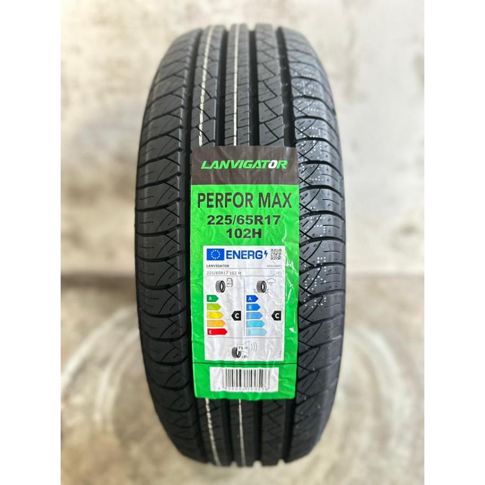

Lanvigator Perfomax 225/65R17

RM 210.00
Lanvigator Performax 225/65R17 102H – SUV Highway & Comfort Tyre Upgrade your daily drive with the Lanvigator Performax 225/65R17, an economical and reliable all-season highway tyre engineered specifically for modern SUVs and crossovers. Designed to deliver a smooth, quiet ride without breaking the bank, it offers dependable wet and dry traction for city commuting and long-distance highway cruising. Key Features & Benefits: • Enhanced Wet Grip & Safety: Four wide circumferential grooves efficiently evacuate water to reduce the risk of hydroplaning on rainy Malaysian roads. • Quiet & Comfortable Ride: Optimized tread pitch sequence minimizes road noise and absorbs bumps for superior cabin comfort. • Long-Lasting Tread Life: Durable rubber compound and even pressure distribution promote uniform wear and extended mileage. • Stable Handling: Reinforced shoulder blocks provide confident cornering and straight-line stability at highway speeds. Technical Specifications: • Brand / Model: Lanvigator Performax • Tyre Size: 225/65R17 • Load Index & Speed Rating: 102H (Max load: 850 kg per tyre | Max speed: 210 km/h) • Vehicle Type: SUV / Crossover / 4x2 & 4x4 (On-road) • Common Compatible Vehicles: Honda CR-V, Mazda CX-5, Proton X70, Toyota Harrier, Toyota RAV4, Nissan X-Trail, Subaru Forester
Klang Hock Li Tyre Services Sdn Bhd, Klang, Selangor, Malaysia.
View live product details and enquire